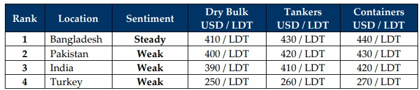

inWeekly Demolition Reports20/10/2025

Global markets continue in turmoil leaving the shipping industry in a true state of disarray as one segment of shipping has remainedalarmingly / surprisingly busy over the last few years while the other opposite end of the segment has been dropped off to an empty pool. Trading markets continue to firm as the Baltic Shipping Dry Index inched up just over 1% this week, backed by the perennial firming of capes, panamax and dry indices, all of which reported gains of 2.1%, 1%, and 2% respectively.
And as charter rates climb and the industry continues to raise the bar of the overall age group of the world’s floating sector, oil decidedly continued its Lira-like descent into the high USD 50s/barrel as it clocked the week out at USD 57.38 / barrel – a whopping 8% decline over the last month alone and an 18% drop since the same time last year.
As cheaper oil and firmer rates help ship owners net wider margins, the ship recycling end of the industry (the empty pool end) has been and continues being deprived of tonnage as year after year, it has been the same story post-covid i.e. next year. And 4+ years into it, things have only gotten worse now that prices seem intent to slip back into the high-USD 300’s/ton, especially in India where an alarming few weeks have passed with Rupee drops, steel declines, and sentiments drowning.
In fact, as we zoom out to the macro of the micro, the overall Indian sub-continent ship recycling market seems intent on withdrawing their levels at the bidding tables this week as even Bangladesh and Pakistan boarded India’s financial roller-coaster, seemingly benchmarking themselves at lower (than their last) levels, all while an air of uncertainty seems ready to gift wrap the upcoming season even though a sudden spike in incoming tonnage over recent weeks at the various anchorages would seem to paint a rather different picture than what is actually playing out on the ground.
Finally, while the conflict in Gaza appears to have actually set a ceasefire rolling, it remains to be seen just how smoothly Red Sea routes open up again with Houthi activity having gone quiet (not silenced) for the time being. And while a resumption of traffic could certainly see global prices start to decline over the long run, for the short term, the impact on the supply of recycling units remains uncertain at this juncture, especially as prices are about break past the USD 200/Ton price-gram from the highs of just 22 months ago.
When that day comes, hopefully we won’t see a deluge of tonnage being proposed for recycling all at once, but rather a staggered, manageable influx of vessels proposed to allow the industry the dignity to digest tonnage in line with the recently implemented Hong Kong Convention. Prices will logically take a hit as supply increases and that will be exacerbated with a growing shadow / dark fleet, as reportedly about 700 vessels have gone ‘dark’ of late – just like Turkey’s performance.
For Week 42 of 2025, GMS Market Rankings / vessel indications are as below

📄 Download PDF: Ship-recycling-market-insight-Week-42-10-17-2025-Certainly_Uncertain.pdfSource: GMS,Inc.https://www.gmsinc.net/gms_new/index.php/web